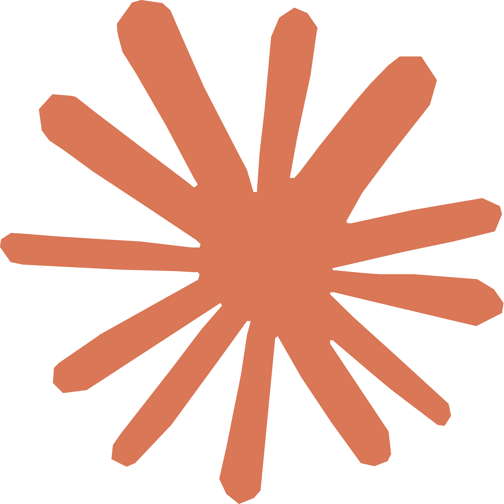
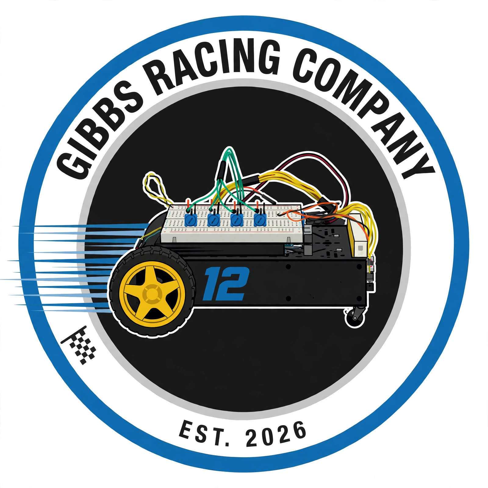
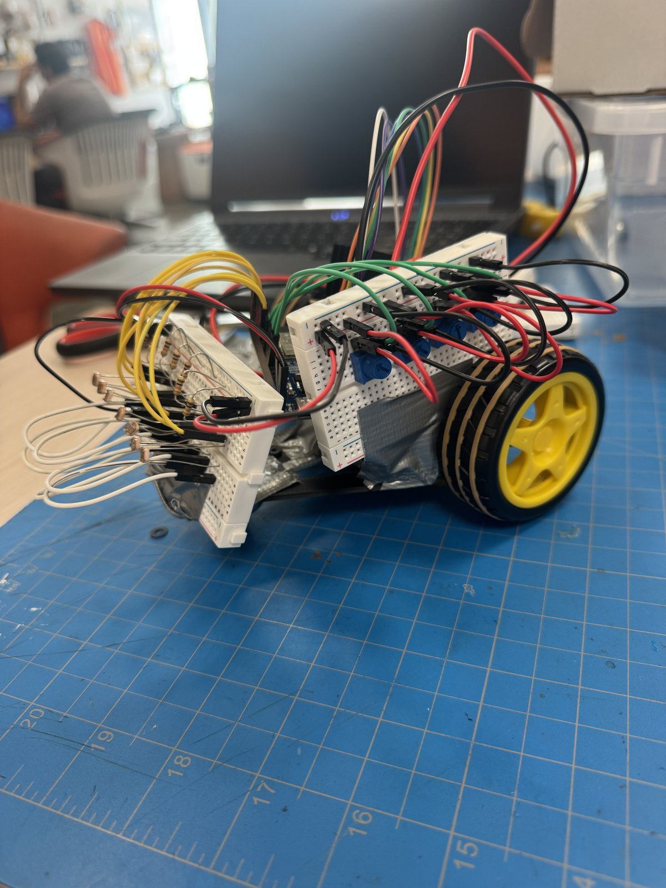

Drag Race
How we set Speed PID for the straight: base speed, any gain changes, and the reason.
- Base speed
- ---
- Kp / Ki / Kd
- - / - / -

Website powered by ClaudeECE 5 · UC San Diego · Prof. Karcher Morris · Fall 2026
Team 12
ENTRY #12 · CLASS: ECE 5 LINE-FOLLOWER
FUN FACT Named after Jahmyr Gibbs, the Detroit Lions running back. Our robot is also small, quick, and very hard to beat. That's also why everything here is Honolulu blue.


How a bag of parts turned into car #12. Breadboard first, chassis second, a lot of re-seated jumper wires third.
Car #12 as it ran on competition day. Hover a number (or a part in the list) to find it on the car.
The line sensors tell the car how far off-center it is. That number is the error. PID is a recipe for turning the error into a steering correction, built from three parts that each look at the error differently.
Looks at right now. Far off the line means steer hard, slightly off means steer a little. Too much P and the car zig-zags.
Looks at the past. If the car keeps drifting to one side, the small errors pile up and I pushes back. Too much and it overshoots.
Looks at where it's heading. If the error is shrinking fast, D eases off so the car doesn't swing past the line. It calms the wobble.
correction = Kp·e + Ki·∫e dt + Kd·de/dt
| Gain | Value | What it did for us |
|---|---|---|
| Kp | 0.00 | One line on what P did on our car. |
| Ki | 0.00 | One line on what I did on our car. |
| Kd | 0.00 | One line on what D did on our car. |
Paragraph on how we tuned: where we started, what went wrong, what we changed, and why we stopped at these numbers.
How we set Speed PID for the straight: base speed, any gain changes, and the reason.
How we set Speed PID for the sweep, where the turns keep tightening.
How we set Speed PID for the loop track, trading speed against staying on the line.
| Rank | Event | Distance | Loops | Time |
|---|---|---|---|---|
| P-- | Drag Race | n/a | n/a | --.---s |
| P-- | Freq Sweep | ---- cm | n/a | --.---s |
| P-- | Loop | n/a | -- | n/a |
Ranks out of -- teams.
Team 12 line-following run.
Sentence on the biggest fix we made in the last week. Sentence on what it changed on track. Optional third sentence.
Sentence on the first thing we'd change with more time. Sentence on why. Optional third sentence.